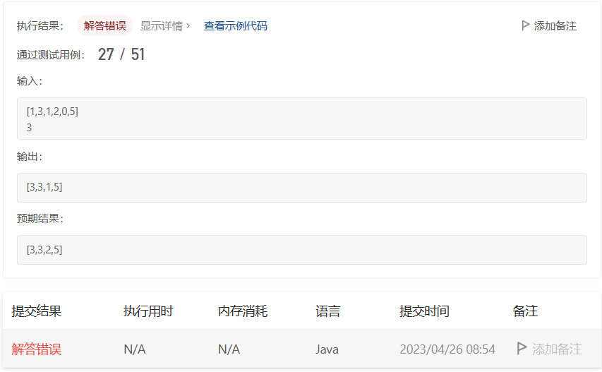

Leetcode-Hot100-239. 滑动窗口最大值&队列以及常用方法
239. 滑动窗口最大值
给你一个整数数组 nums，有一个大小为 k
的滑动窗口从数组的最左侧移动到数组的最右侧。你只可以看到在滑动窗口内的
k 个数字。滑动窗口每次只向右移动一位。
返回 滑动窗口中的最大值 。
示例 1：
1 | 输入：nums = [1,3,-1,-3,5,3,6,7], k = 3 |
示例 2：
1 | 输入：nums = [1], k = 1 |
提示：
1 <= nums.length <= 105-104 <= nums[i] <= 1041 <= k <= nums.length
算法分析：
普通队列 （×）
分析题目的时候，感觉这题要用一下辅助队列，我先拿普通队列试了一下，发现用例只通过了一半。
大致思路就是：
- 初始化，把第一个窗口初始化，队列也初始化。
- 循环：每次新进来一个元素，出去一个元素。先判断出去的元素是不是队首元素，如果是，队首出队。如果不是，left前移，循环判断加进来的元素是否大于队首，将小于该元素的队列中的元素移除。然后将该元素入队。
来看代码：
1 | class Solution { |
错误案例：

分析错误用例，我发现原因就是我的队列的元素不是有序的，然后导致较小的元素篡位了...
然后看了眼题解，可以用双端队列保证元素有序。
辅助双端队列 + 单调队列：
思路：
遍历nums数组，每个元素进队时，从队尾判断，保证队列单调,队首元素是最大的。
将元素的下标添加到队列。
判断队首元素是否过期，也就是说队首元素是否在滑动窗口内，不在就出队。
当窗口成型，就可以写入结果集。
代码：
1 | class Solution { |
知识拓展
Queue常用方法：
Java中的Queue是一个接口，表示一种队列的数据结构，常用方法如下：
- add(element): 将元素添加到队列的末尾，如果队列满了会抛出异常。
- offer(element): 将元素添加到队列的末尾，如果队列满了会返回false。
- remove(): 移除队列的头部元素，并返回该元素，如果队列为空会抛出异常。
- poll(): 移除队列的头部元素，并返回该元素，如果队列为空会返回null。
- element(): 返回队列的头部元素，但不移除该元素，如果队列为空会抛出异常。
- peek(): 返回队列的头部元素，但不移除该元素，如果队列为空会返回null。
- size(): 返回队列中的元素个数。
- isEmpty(): 判断队列是否为空，如果队列为空返回true，否则返回false。
- contains(Object o): 判断队列中是否包含指定元素，如果包含返回true，否则返回false。
这些方法可以通过Java中Queue的实现类（如ArrayDeque、LinkedList等）来调用。
Deque常用方法：
Java中的Deque是一个接口，表示一种双端队列的数据结构，常用方法如下：
- addFirst(element): 将元素添加到双端队列的头部，如果队列满了会抛出异常。
- offerFirst(element): 将元素添加到双端队列的头部，如果队列满了会返回false。
- addLast(element): 将元素添加到双端队列的尾部，如果队列满了会抛出异常。
- offerLast(element): 将元素添加到双端队列的尾部，如果队列满了会返回false。
- removeFirst(): 移除双端队列的头部元素，并返回该元素，如果队列为空会抛出异常。
- pollFirst(): 移除双端队列的头部元素，并返回该元素，如果队列为空会返回null。
- removeLast(): 移除双端队列的尾部元素，并返回该元素，如果队列为空会抛出异常。
- pollLast(): 移除双端队列的尾部元素，并返回该元素，如果队列为空会返回null。
- getFirst(): 返回双端队列的头部元素，但不移除该元素，如果队列为空会抛出异常。
- peekFirst(): 返回双端队列的头部元素，但不移除该元素，如果队列为空会返回null。
- getLast(): 返回双端队列的尾部元素，但不移除该元素，如果队列为空会抛出异常。
- peekLast(): 返回双端队列的尾部元素，但不移除该元素，如果队列为空会返回null。
- size(): 返回双端队列中的元素个数。
- isEmpty(): 判断双端队列是否为空，如果队列为空返回true，否则返回false。
- contains(Object o): 判断双端队列中是否包含指定元素，如果包含返回true，否则返回false。
这些方法可以通过Java中Deque的实现类（如ArrayDeque、LinkedList等）来调用。
本博客所有文章除特别声明外，均采用 CC BY-NC-SA 4.0 许可协议。转载请注明来自 VLS_Blog！